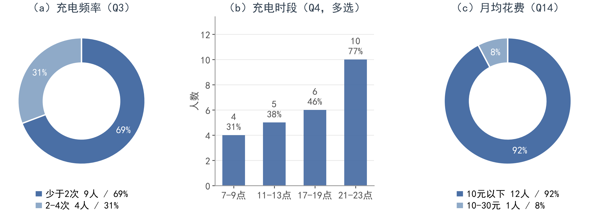
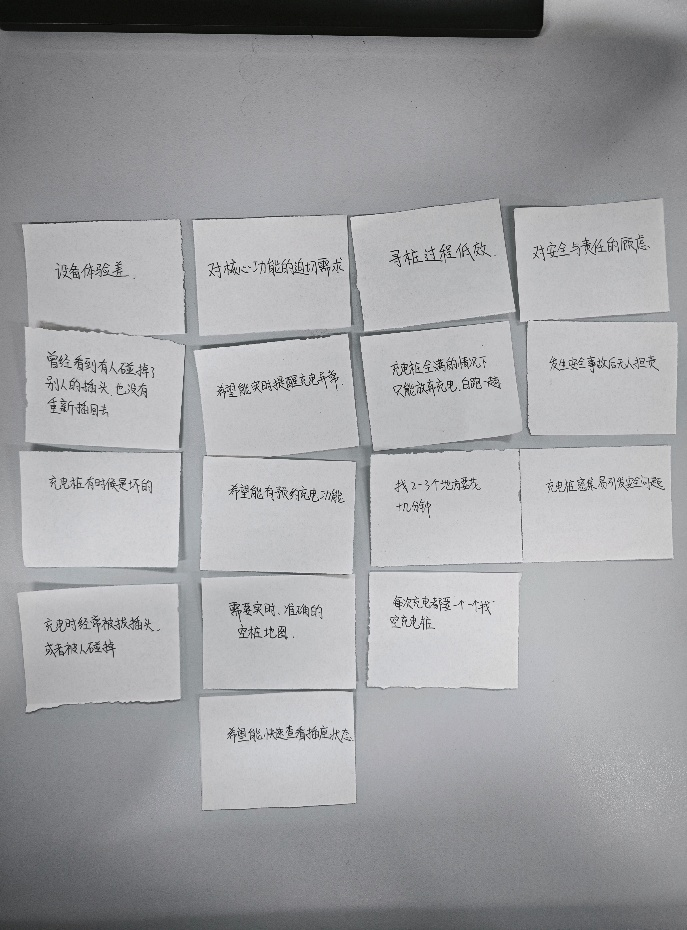
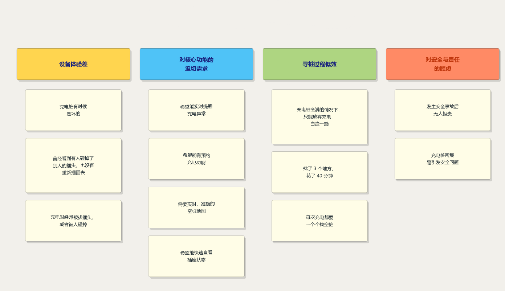

一、研究概况与数据分析思路
本项目致力于打造一款面向全校师生的「校园电动车充电桩预约与共享平台」。为理解用户真实的充电处境，本研究采用「问卷 + 访谈」的混合方法：先以问卷获取可量化的行为分布与态度倾向，再用访谈解释数字背后的动机与情绪。
问卷涵盖基本信息、充电行为、痛点体验与需求意愿四个维度；访谈对象为几位电动车用户，围绕「最近一次充电的完整过程」追问事件细节、情绪感受与深层需求。
二、调查问卷数据分析
用户基本信息
- 身份：81% 本科生，19% 研究生。
- 性别：62% 男，38% 女。
充电行为的三个特征
（1）频率中低，但每一次都是「刚需」
69% 的用户每周充电少于 2 次，31% 为每周 2–4 次，没有每周 5 次以上的高频用户。这说明充电桩的「总量」并非完全不够，真正的问题在于「可靠性」——因为充电频次低，用户没有试错空间，一次充不上就意味着第二天的通勤被打断。
（2）时段高度集中，供需在时间上错位
充电时段呈现明显的晚高峰聚集：21–23 点占比最高，其次是 17–19 点下课时段与 11–13 点午休，7–9 点晨间最低。这种高度集中的时段分布，是排队与无桩可用的直接原因：桩的总量也许够，但在 21 点之后被瞬时抢占。这属于峰值缺口，而不是总量缺口，因此更有效的干预是削弱高峰与预约，而不是单纯增加桩的数量。
（3）月支出低，价格高度敏感
92% 的用户每月充电花费低于 10 元，仅 8% 在 10–30 元之间。充电本身是「低单价、高频刚需」的消费，用户对价格敏感，却仍有 85% 愿意为预约支付 0.5–1 元。

总结核心痛点
- 「白跑」是最普遍的挫败体验。部分用户几乎每周都在经历一次无效出行。白跑同时消耗了时间、体力和情绪，是用户最先抱怨、也最容易被产品解决的痛点。
- 对现有桩数量的满意度偏低。用户评价充电桩数量偏低，但结合白跑情况看，他们真正不满的是充电桩的可用性。有桩却充不上，感受上等同于没有桩。
- 信息渠道原始，用户「纯靠运气」。用户不是不知道哪里有充电桩，而是无法知道此刻有没有空位。
三、访谈数据分析与亲和图
根据问卷与访谈结果，我们最终整理出十几条原始素材，作为亲和图的输入。
首先，将访谈记录拆解为独立的观点或事实，写在便签上。
将内容相似、相关的便签移动到一起，形成一个小组，然后为每一个小组创建一个新的便利贴，即「主题标签」。这个标签应该能精准地概括该组所有便利贴的核心思想。


四、数据总结
| 主题 | 条数 | 核心内容 |
|---|---|---|
| 设备体验差 | 3 | 硬件不可靠 + 人为干扰（桩是坏的、插头被拔且不复位） |
| 对核心功能的迫切需求 | 4 | 实时状态可见、预约、准确空桩地图、快速查看 |
| 寻桩过程低效 | 3 | 信息缺失导致的时间浪费 |
| 对安全与责任的顾虑 | 2 | 事故无人担责、密集布桩隐患 |
主要结论
- 用户抱怨的是「不知道哪个能用」。12 条里 7 条指向信息不可见（空桩地图、插座状态、实时提醒、异常提醒、预约）。问题的本质是信息获取难，不是容量问题。
- 用户有自己的需求清单。用户提出了「实时提醒」「预约充电」「实时准确的空桩地图」「快速查看插座状态」等需求，设计上应当照单实现。
- 用户存在对安全与责任的顾虑。用户在意公共秩序维护以及责任划分等问题，设计产品时应注意。
对设计的启示
实时空桩地图与插座状态查看，解决「看不见」的问题。
充电完成与异常中断实时提醒，让「被拔插头」从被动发现变成主动感知。
预约与占位机制，解决「白跑一趟」和抢桩行为。
故障桩上报与巡检，降低安全风险。